back

Trinocular heads
Common camera adaptations from
Ichthyophthirius:

I: Viewing (objective - ocular - human eye)
II: Afocal (objective - ocular - camera lens - sensor)
III: Refocussing (not recommended)
IV: Eyepiece projection (lifting eyepiece while maintaining the intermediate image location O')
V: Projective (objective - relay optic - camera sensor)
VI: Direct projection (camera sensor at O')
VII: Macro lens, instead of photo relay lens, focused at O'
also discussed under "Converting finite optics to infinity corrected"
Head banging
The quintuple RMS objective nosepiece turret used on my Optiphot
interferes with corners of trinocular heads.
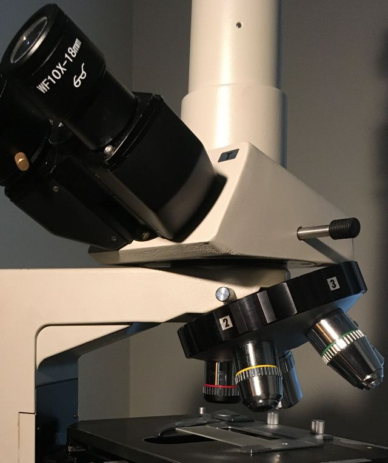
This occurs with neither binocular head nor quadrupal BD objective turrets.
Practically, this is an issue with neither type T (regularly installed) or F,
since the Optiphot is arranged for viewing from the left side.
The F head, which requires rotating to switch between oculars and camera,
would be problematic if oriented for viewing from front, rear, or right side.
Other Optiphot quintuple nosepiece turrents on eBay have thinner plastic or metal outer rings;
this one may have been intended for inverted scopes and is no problem
when used with a vertical illuminator and M Plan objectives, but seems a peculiar oversight.
Nikon Type F Trinocular Microscope Head
eBay item number: 392906516398
Condition: For parts or not working
Brand: Nikon
Model: Type F
This Nikon Type F Trinocular Microscope Head is in good cosmetic condition
with scuffs and scratches present.
I was able to smoothly turn the trinocular port to change the viewing
from the eyepieces to the port.
The optics appear to be clear from a quick visual inspection.
I do not have the knowledge or equipment to fully test this unit,
so it is sold As-Is.
Approximate unpacked dimensions: 9" x 5" x 7"
received 21 May 2022
Nikon CF objectives,
unlike most earlier microscope objectives,
require no additional optics to correct chromatic aberrations.
With the relay lens chimney removed,
a "standard" (ISO 38mm) photo tube is available:
Type F direct projection: M42 to 38mm Telescope Ring Adapter
eBay item number: 274696367794
Condition: New
Model: AD-M42-38
Microscope Adapter Type: Camera Adapter
Top Mounting Diameter: M42 (42x0.75 mm)
Bottom Outer Diameter: 38 mm or 42 mm
Height: 37 mm
received 20 May 2022
Its thread is actually
T2 (filter) 0.75mm thread pitch),
not
M42 lens mount (1.0 mm thread pitch);
plug-and-play with a thin M42 to Canon EOS-M flange:
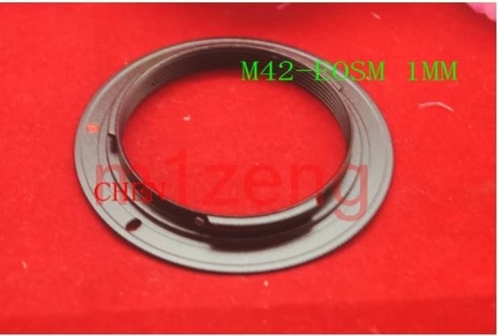
Since there are no optics in Type F head between its bottom flange
and the ISO photo port,
camera sensor is a "direct" shot
from objectives (ignoring vertical illuminator beam splitter and/or DIC prisms).
An AO 10-120 tube lens seemingly provides equivalent corrections
for their infinity objectives;
no additional optics
are necessary for digital imaging to correct chromatic aberrations.
Since designated AO photo relay optics are either rare or unavailable,
tube lens direct focus to camera sensors seems worth attempting.
Nikon Type T Trinocular Microscope Head
bundled with Optiphot-66
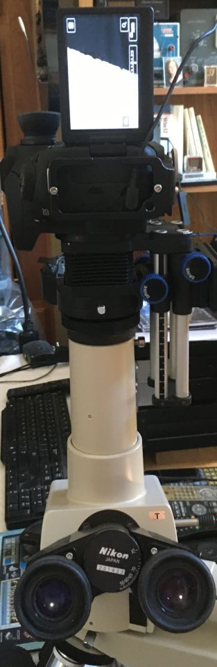
Unlike the type F, type T (and type UW) have nearly the opposite of a tube lens
at their bottom flange,
creating
an approximate infinity space around beam splitter for oculars and photo tube.
Its removable photo tube chimney has nearly a tube lens at its bottom
to convert back from that beam splitter space to focus for a photo relay lens.
With that chimney removed,
focusing a camera lens towards that nearly reversed tube lens yields images
of a strongly cropped field,
indicating that space is not really infinity.
Chimney construction does not allow for camera sensor placement at that focal plane.
The chimney has an internal aperture stop at its 50mm thread.
Lip above 50mm thread to chimney bottom
(with 44mm female thread) is 49mm.
Sadly, vertical illuminator extension for Optiphot-66 is 95mm long;
it has useful diameter and threads...
Trinocular "T" photo tube lens on 42mm extension tubes and helicoid
12 Aug 2022
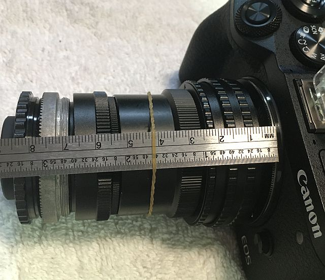
82mm from photo tube to Canon M6 II body flange
yields images
parfocal to WF10X/23 oculars in UW head
with matching field of view:
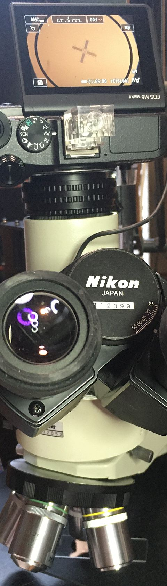
Type UW
Received 28 July with
DIC Optiphot-66
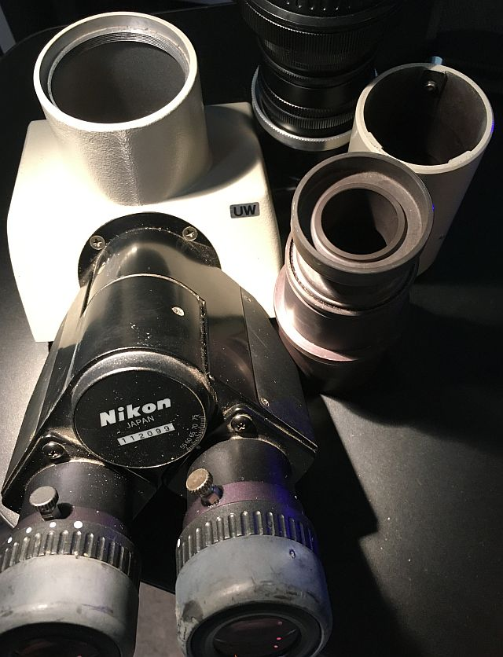
UW head eye tubes are 36mm o.d., about 3mm larger than 30mm clamp compression groove...
Leica eyepiece shield is about 42mm o.d.;
use 2" extension tube with M48 to 52mm adapter
for 40mm pancake lens.
Trinocular chimney is missing its "tube lens" for nominal infinity space around binocular prisms.
Brooke Clarke describes his UW as having
a slightly larger entrance optical diameter (18mm)
compared to the stock trinocular head (16mm),
which I confirmed by measurement,
but also an ISO 38mm camera port;
his type UW version has an M50x0.75 to ISO 38mm adapter:

One appears to be available at
deal corner:
 ... mine has a threaded chimney seemingly identical to that for type T.
... mine has a threaded chimney seemingly identical to that for type T.
Type T or UW direct projection
Lens at the bottom of T photo port chimney has about 82mm focal length (~ 12 diopter);
82mm is also roughly the distance from bottom lens to photo relay lens mount in the trinoc chimney.
Several methods for preempting a photo relay lens for type Y or UV trinocular heads
(which dimensions match):
teaching/discussion head
chop off chimney insert just above 50mm thread
insert e.g Zeiss Triotar 1:4 f=13,5 cm ("slim"; M42 thread)
replace chimney insert with Pentacon microscope adapter
3D-printed chimney insert replacement with surplus shed 125mm doublet
Ichthyophthirius
described a "direct" projection conversion for this UW type,
with a 100mm focal length achromat sandwiched between 32-42mm rings:

Scarodactyl used a 125mm surplus shed doublet and 3-D printed chimney

A 32mm diameter, 7mm thick cemented doublet achromat with 135mm fl was
ordered from Surplus Shed

Surplus Shed also lists a 35mm diameter 125mm fl mounted achromat,
and its advertised threaded 44mm diameter mount might fit Nikon's chimney bottom thread,
but 13mm beyond the chimney bottom would not work. Alternatively:
Achromat doublet asymmetry
This
demonstrates that convex side should face parallel rays:

Surplus Shed 135mm achromat doublet was delivered 1 Aug 2022
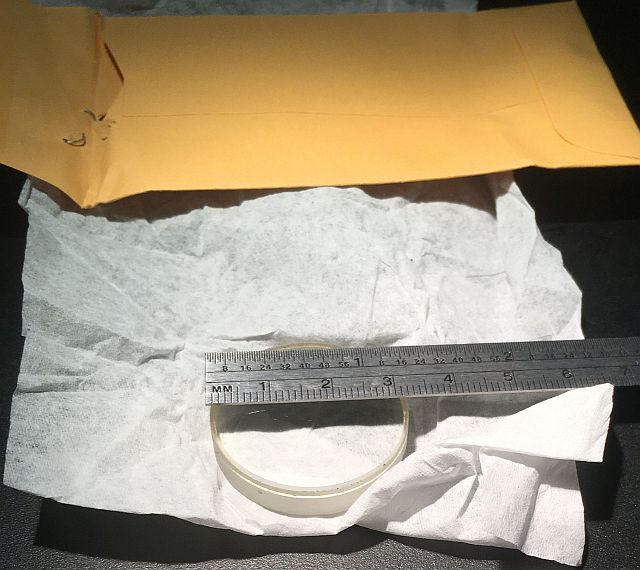
Tiffen 44M6 adapter was delivered 2 Aug 2022
- Tiffen adapter male 44mm thread cannot reach Nikon photo chimney bottom thread,
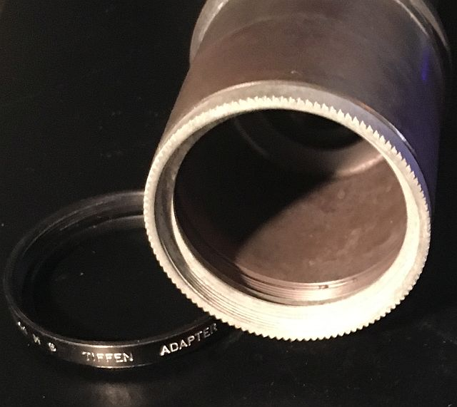
but Series VI filter thread reaches and engages.
"direct" projection experiments
Surplus Shed 135fl lens was temporarily hot-glued to an M42-25mm adapter;
Another direct projection tube candidate uses 2+ and 4+ 37mm closeup lenses:
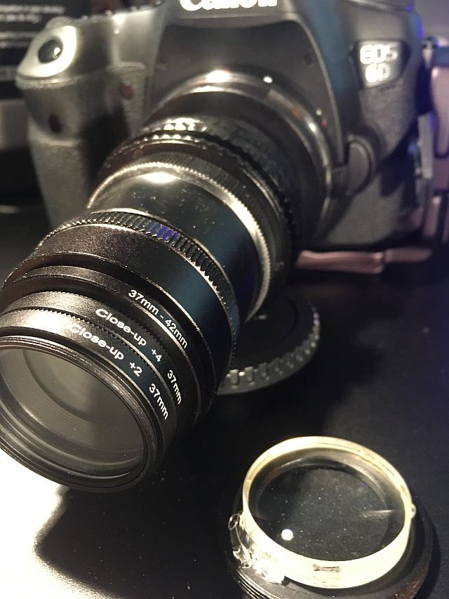
The closeup tube extends 55mm down from the UW photo port lip
and 67mm from the UW photo port lip to Canon 6D flange.
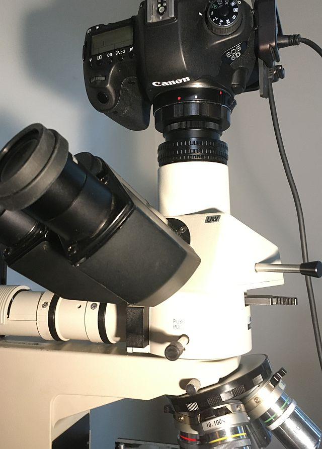
The Surplus Shed tube extends 85mm from Canon 7D II flange to 135mm lens:
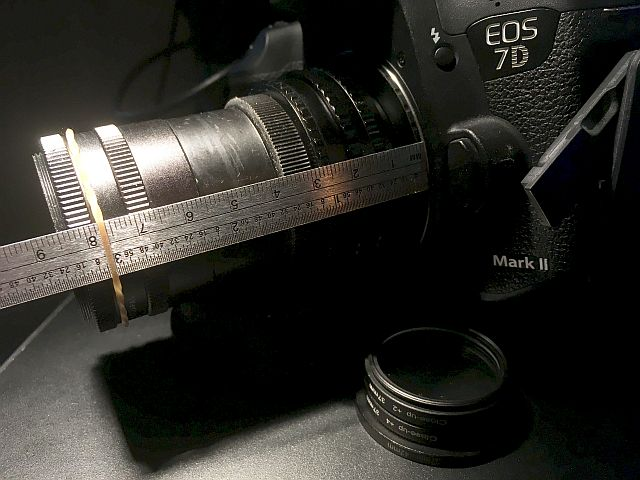
...with 55mm below the UW photo port lip
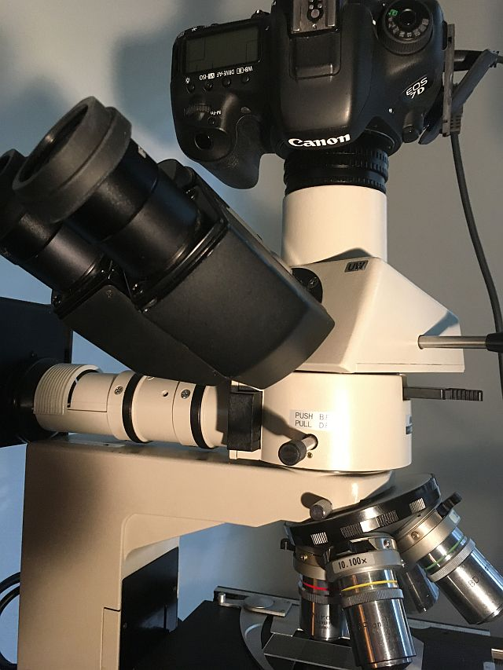
Keeping in mind that Canon 6D has a 35mm sensor while 7D is APS-C,
both configurations capture a larger FoV than do WF10X/23 oculars.
Here is the Canon 6D with closeup lens image;
vignette is by field stop and not visible in oculars:
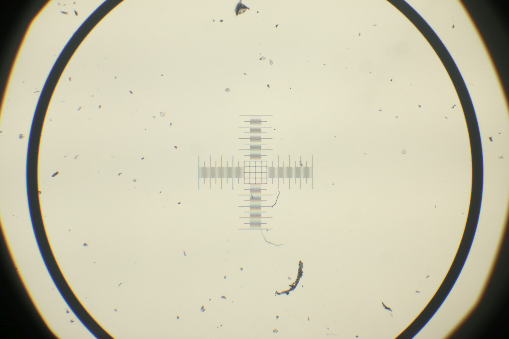
Here is the Canon 7D II with 135mm fl doublet lens image:
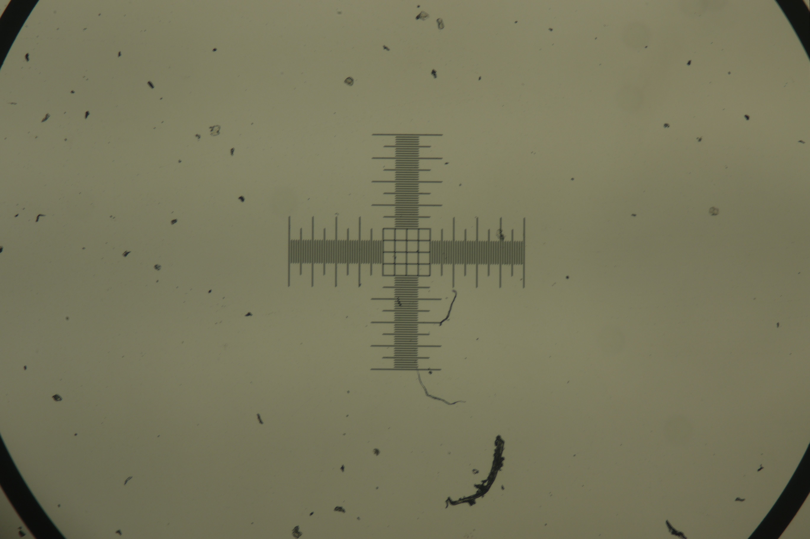
Images are from BD Plan DIC 5x 210/0 objective with DIC prism inserted.
Here is crop of closeup lens image:
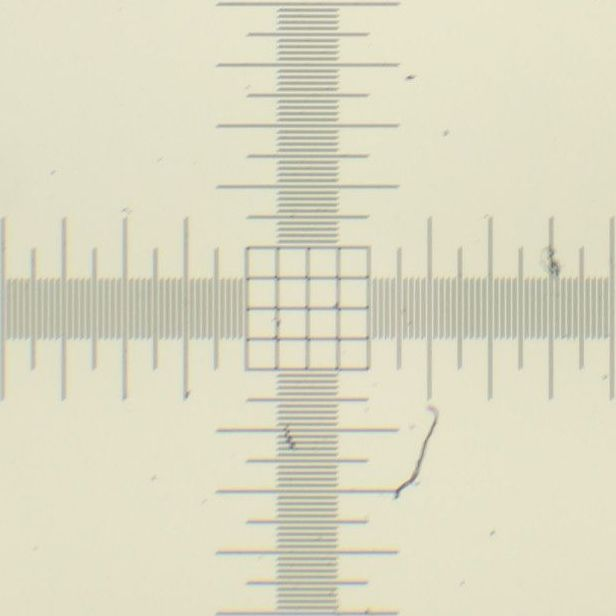
.. and here is the corresponding 135mm doublet crop:
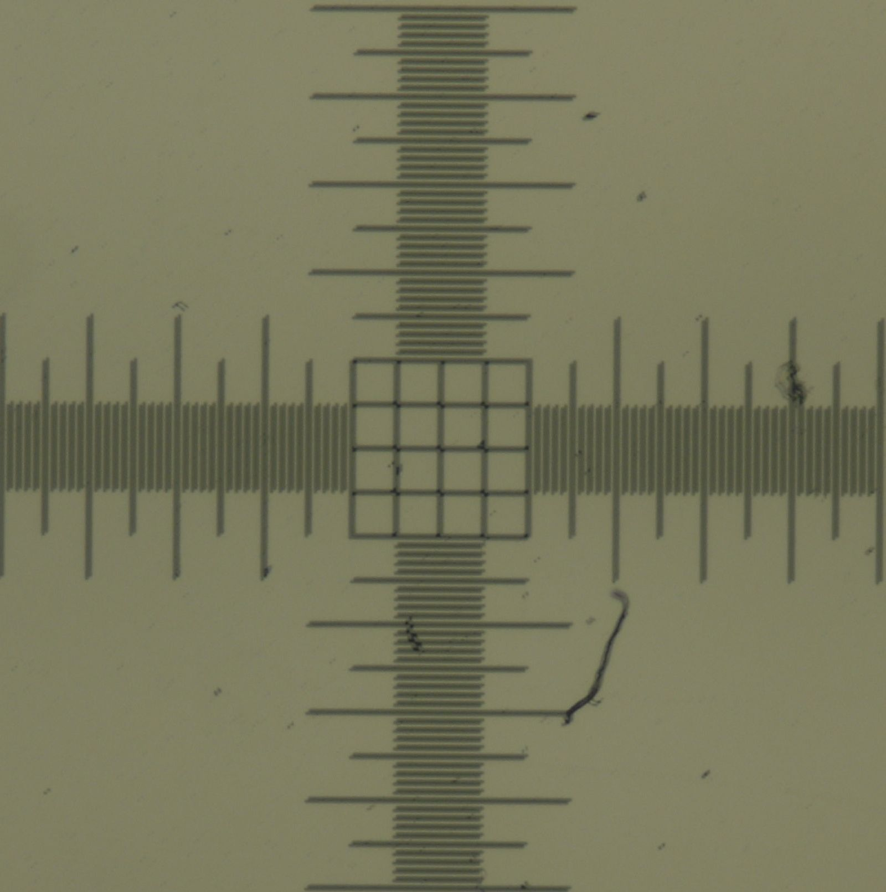
10 Aug 2022
Based on
Sure Squintsalot
's input, I tried direct projection to M6 mkII sensor from UW bottom lens:
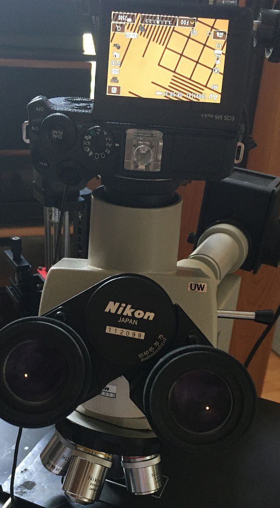
Focus required lifting objectives enough that should in theory degrade resolution,
but more disasterously above 40X and 0.65 n.a..
While the M6 II skyhook was in place, an M42 extension tube + helicoid was improvised for it,
with a mount for the Surplus Shed 135mm achromat doublet improvised from a pair of rubber o-rings
and 42-43mm, 43-37mm and 37-30mm filter adapter rings:
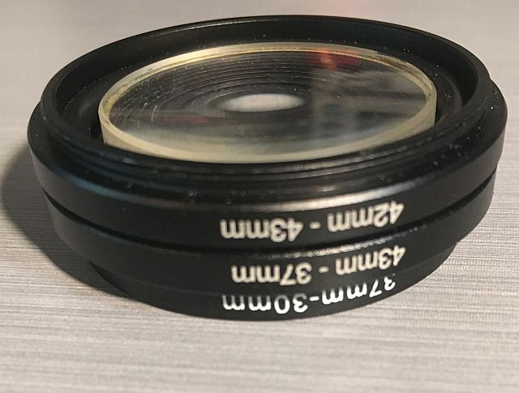
.. leaving the lens recessed about 6mm (thickness of 37-30mm step-down):
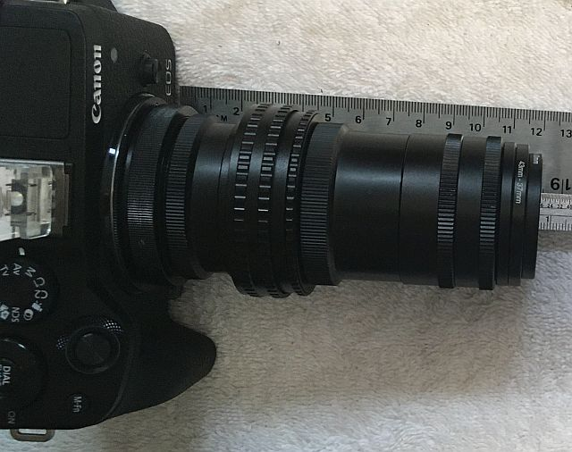
.. for a net distance of about 115mm from M6 flange to 135mm lens front.
While knurling o.d. on most M42 extension tubes is too large to pass 50mm thread in Trinocular T or UW chimneys,
some old aftermarket automatic extension tubes for Pentax, etc
will fit.
As with the 7D, 5X field is magnified and cropped slightly relative to oculars:
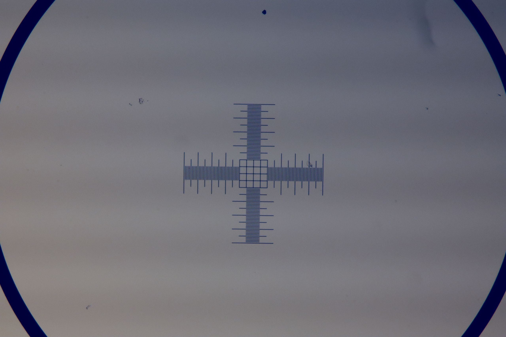
.. with some visible chromatic aberration from BD 40x objective:
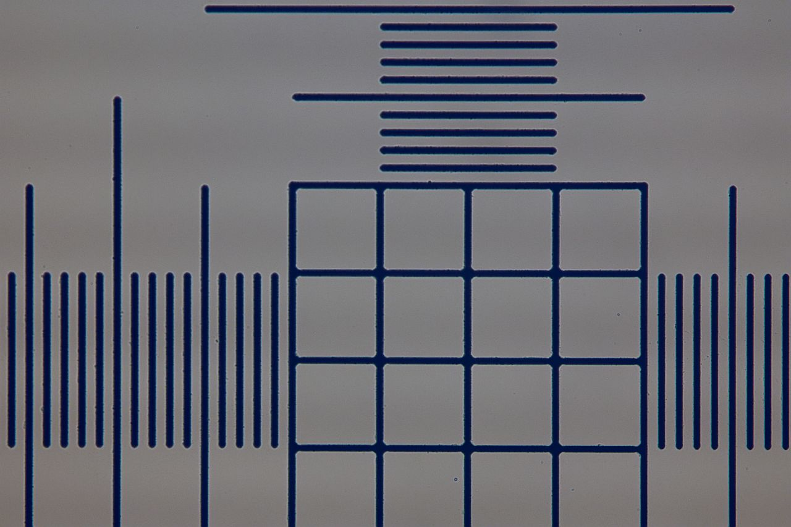
Type Tc Trinocular Microscope Head
received 23 Aug 2022 with
Metaphot
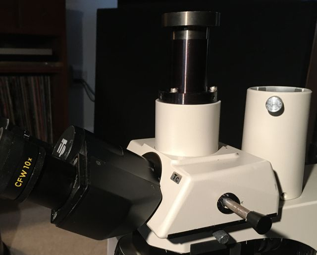
- Unlike type T, there are no lenses for that pseudo-infinity space around prisms;
- Tc head has an additional 30mm of tube length over F, T, UW heads.
Here is a Metaphot with a T head and spacer to make up that difference:

Photo tube mounts by 3 screws; removal should allow direct projection.
52-30mm step-down and 42-52mm step-up were ordered for a direct adapter.
After using chimney screws to center the photo tube in 52-30mm step-down ring:
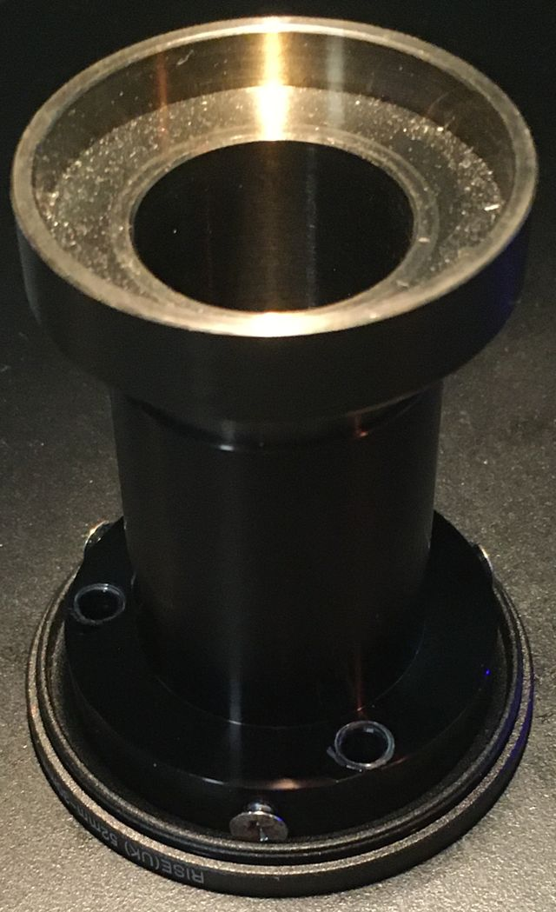
... its mounting holes were scribed and 1/8-inch holes drilled in that step-down ring:
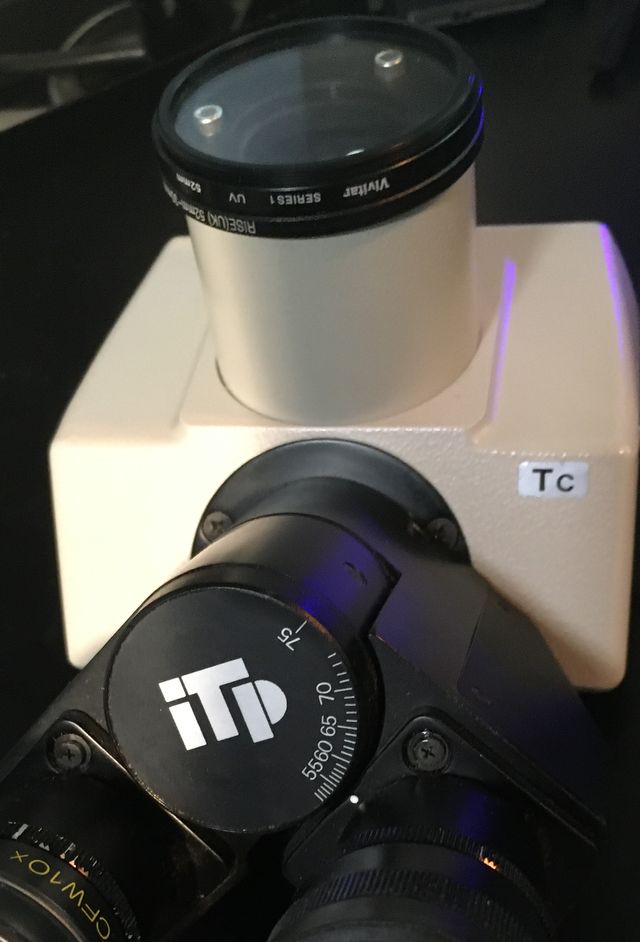
... awaiting 42-52mm step-up ring to complete T2 adapter.
6 Sept - 42-52mm step-up ring arrived
M6 mkII needs > 10mm additional spacing;
currently using a pair of 52mm camera filters;
an M42 10-15mm helicoid will be ordered after late Sept trip.
Binocular salvage/repurpose
A binocular head with Siedentopf eye tubes broken off and missing was included with a parts-only Labophot.
Screws holding that broken flange were too tight for easy removal;
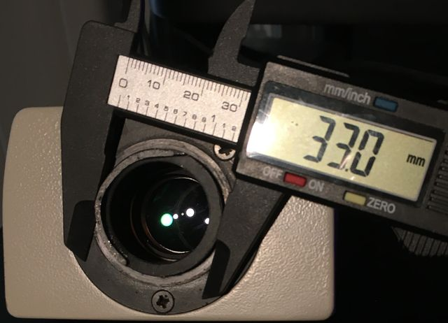
...instead, use a 33-42mm step-up ring to repurpose this head as a dedicated camera port.
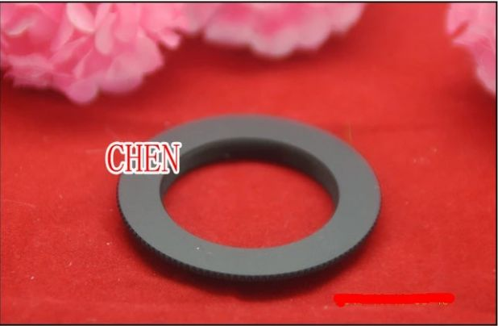
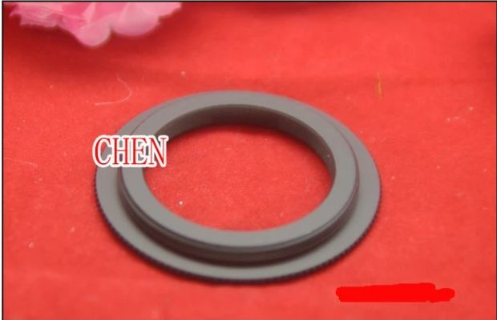
33.8-42mm might be an easier fit.